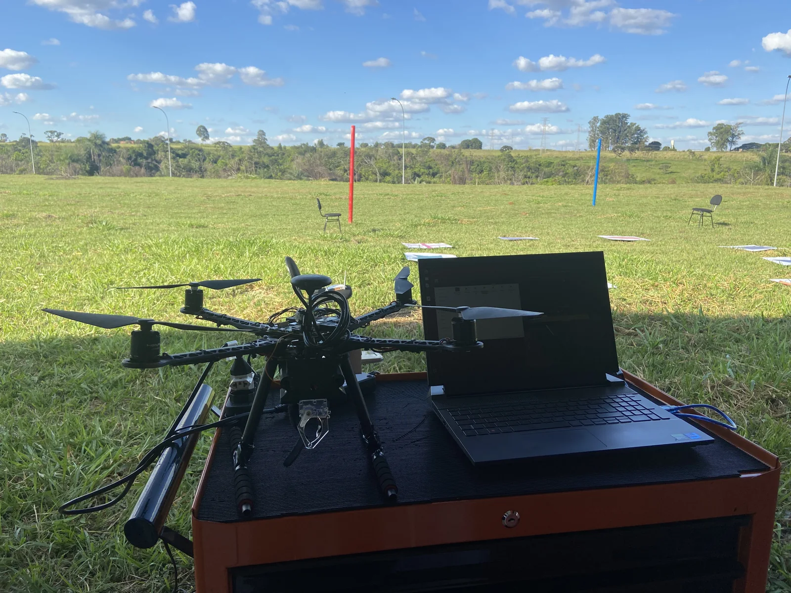

Construir um drone do zero é diferente de comprar um pronto. Cada componente, cada fio, cada linha de código — tudo foi escolhido, integrado e testado pela nossa equipe. Este post abre o capô do nosso quadrotor SAE e conta os bastidores do desenvolvimento.
Do primeiro esboço ao pódio nacional em menos de 12 meses. Aqui está como fizemos — e o que aprendemos no caminho.
A Arquitetura do Sistema
Um drone de competição autônomo é, na prática, um sistema embarcado voador. Ele precisa perceber o ambiente, tomar decisões e executar manobras — tudo em tempo real, sem piloto. Para isso, nossa arquitetura foi dividida em três camadas principais:
1. Percepção
A camada de percepção é responsável por coletar dados do mundo. Nosso drone conta com GPS para navegação de alta precisão, IMU (Unidade de Medição Inercial) para estabilização, barômetro para controle de altitude e uma câmera RGB para detecção de alvos por visão computacional.
2. Processamento
O cérebro do drone é um computador de bordo rodando ROS e comunicação MAVROS. É ele que funde os dados dos sensores, roda os algoritmos de navegação e processa as imagens da câmera em tempo real para identificar os alvos das missões.
3. Atuação
Os comandos do computador chegam à controladora de voo Pixhawk 4, que os traduz em sinais PWM para os 4 ESCs e, consequentemente, para os motores. A resposta é em milissegundos — essencial para manter o drone estável no ar.
Os Maiores Desafios
Fusão de Sensores
Combinar dados de GPS, IMU e barômetro de forma consistente foi um dos maiores desafios de software. Pequenas discrepâncias entre os sensores geram oscilações na posição estimada, que se traduzem em movimentos indesejados do drone. A integração depende de calibração, configuração da controladora e verificação das leituras durante os testes.
Visão Computacional Embarcada
O processamento da câmera precisa dividir os recursos do computador de bordo com a comunicação e a navegação. A integração com ROS e MAVROS conecta essas etapas à controladora de voo.
Exemplo conceitual de decisão; não é o programa completo de voo.
// Exemplo simplificado: detecção de alvo e pouso
if (detector.encontrou_alvo()) {
float dx = alvo.x - drone.x;
float dy = alvo.y - drone.y;
float dist = sqrt(dx*dx + dy*dy);
if (dist < THRESHOLD_POUSO) {
missao.iniciar_pouso_preciso();
} else {
navegacao.mover_para(alvo.x, alvo.y);
}
}Confiabilidade em Campo
Em competição, não existe segunda chance. Cada falha de hardware ou software significa pontos perdidos. Desenvolvemos um protocolo rigoroso de testes antes de cada voo, com checklists de software, verificação de bateria e teste de todos os atuadores em solo antes de armar o drone.
O Que Aprendemos
O principal aprendizado foi que simplicidade é robustez. Nas primeiras versões, o sistema tinha muitos subsistemas interdependentes — qualquer falha em um cascateava para os outros. A versão final priorizou módulos independentes com fallbacks bem definidos.
Outro ponto crucial: testar cedo e testar muito. A integração precisa ser verificada de forma gradual, acompanhando o comportamento dos sensores, da comunicação e dos atuadores.